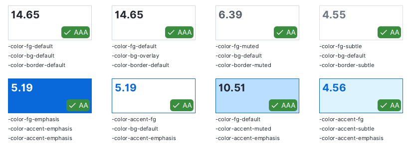
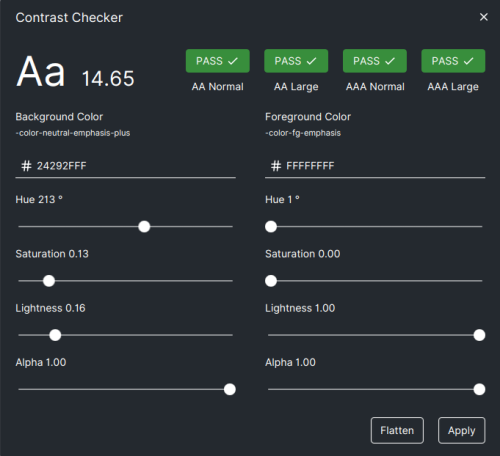

Theming
AtlantaFX uses looked-up colors. Each color property starts with -color-* prefix. There're global colors, that are defined at the Scene root level and individual controls colors (check the corresponding control reference for the info).
What's looked-up color?
TL;DR: It's a color variable.
As any other CSS property looked-up colors resolved according to CSS specificity rules. If you imagine the following hierarchy:
Scene [class = root]
Region [class = r1]
Region [class = r2]
Region [class = r3]
We can manipulate the background color of each descending node with the following CSS rules (most specific wins):
.root { -color-background: transparent; }
.r1, .r2, .r3 { -fx-background-color: -color-background; }
.r2 { -color-background: red; } /* applied to the r2 and below */
.r2 > .r3 { -color-background: green;}
JavaFX will try to resolve color variable value starting from the most to the least specific rule, which is always the root of the Scene hierarchy.
Result:
r1 - transparent
r2 - red
r3 - green
All stylesheets are written in SASS and compiled to CSS by using a very handy sass-cli-maven-plugin. You don't have to learn SASS, though it's a very simple language if you're already familiar with CSS.
Tip
Theme is not limited by colors. If you only want to change global colors, all you need is to override default looked-up color variables. The easiest way is to utilize pseudo-class, so you can always return to the default color scheme.
.root:custom-theme {
-color-bg-default: #123456;
/* ... and so on */
}
// declare pseudo-class
private static PseudoClass CUSTOM_THEME = PseudoClass.getPseudoClass("custom-theme");
// then apply it to the root node
getScene().getRoot().pseudoClassStateChanged(CUSTOM_THEME, true);
Compilation
You can find ready to use custom theme template in the atlantafx-sample-theme repository.
-
Clone the sample repository.
git clone https://github.com/mkpaz/atlantafx-sample-theme -
Compile it.
cd atlantafx-sample-theme mvn compile [-Pwatch] # (optionally) watch for changes -
Grab resulting CSS from
dist/directory and connect it to your application.Application.setUserAgentStylesheet(/* path to the CSS file */);
Modification
Each SCSS file in the source directory is nothing but a separate SASS module that can be imported by other files. You can find a bunch of SASS variables at the top of a file. If variable is marked as !default, it can be changed during theme compilation.
In fact, any AtlantaFX theme can be used as an example. They all share the common sources and use SASS variable modification to compile the different stylesheets.
Tip
If you want to customize a style property that is not exposed as SASS variable, don't hesitate to open an issue or send a PR.
Warning
Note that SASS is only loading any module (file) just once, so customization order does matter. E.g. if A module imports B and B imports C then we have to override C variables first, then B, then A. Otherwise, there will be an exception that we are attempting to change a variable in a module that has been already loaded.
Example:
// Color customization.
@forward "relative/path/to/settings/color-vars" with (
// ...
);
// Shared property customization.
@forward "relative/path/to/settings/config" with (
// ...
);
// This should precede controls customization, as it guarantees
// that .root styles precede components styles.
@use "general";
// Individual component property customization.
// Use "as name-*" to avoid conflicts if two or more SASS modules
// contain variables with the same name.
@forward "relative/path/to/components/split-pane" as split-pane-* with (
// ...
);
Color Contrast
If you want to develop a good theme, there are some accessibility rules. Color contrast between text and its background must meet required WCAG standards. The contrast requirements are:
4.5:1for normal text3:1for large text (>24px)3:1for UI elements and graphics- No contrast requirement for decorative and disabled elements
You can check and modify color contrast directly in the Sampler app.

Click on any block to run contrast checker and get more detailed info.

Testing
You can use Sampler app to test and develop your custom theme. Including hot reload, of course.
Start Sampler app in development mode (check build instructions for more info). If you downloaded packaged Sampler app, you can do that by setting ATLANTAFX_MODE=dev env variable.
Go to the Theme page and add your CSS file.